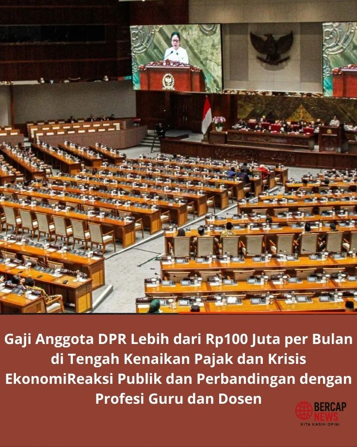

Kontroversi Gaji Anggota DPR Lebih dari Rp100 Juta per Bulan di Tengah Kenaikan Pajak dan Krisis Ekonomi
Reaksi Publik dan Perbandingan dengan Profesi Guru dan Dosen. Ungkapan ini memicu reaksi keras di masyarakat. Banyak yang membandingkan gaji fantastis anggota DPR dengan nasib guru dan dosen di Indonesia yang dinilai jauh dari kata sejahtera.